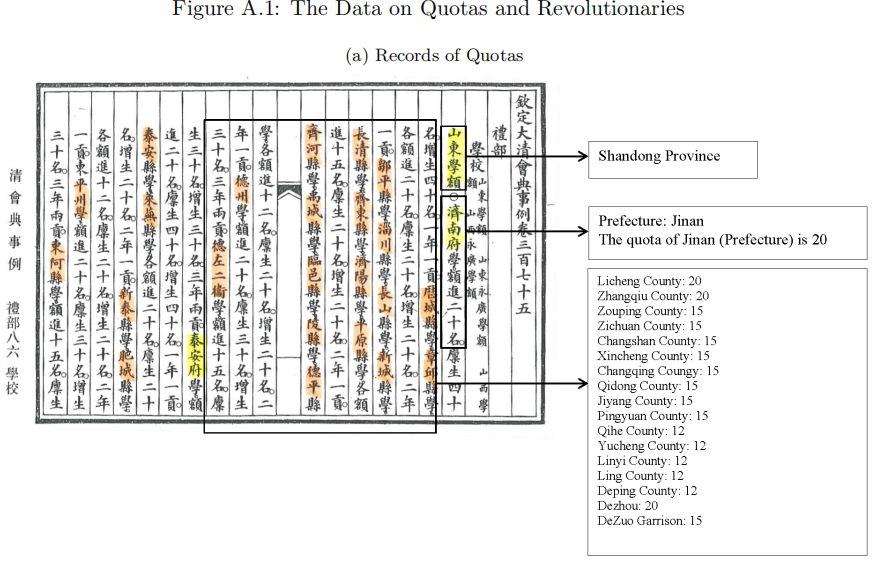
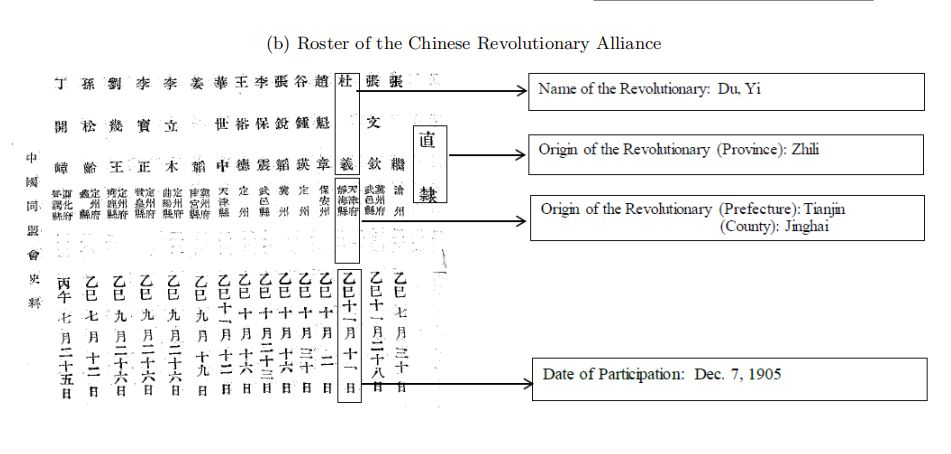
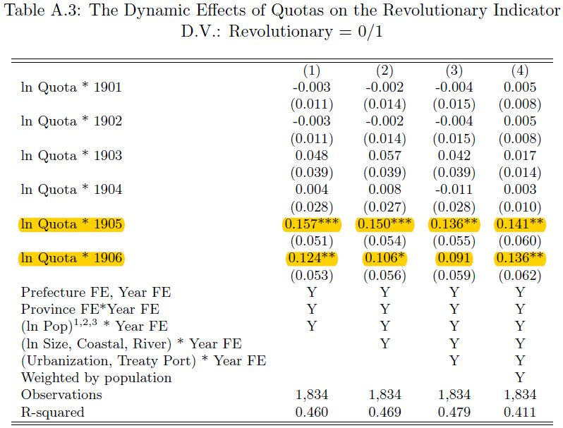
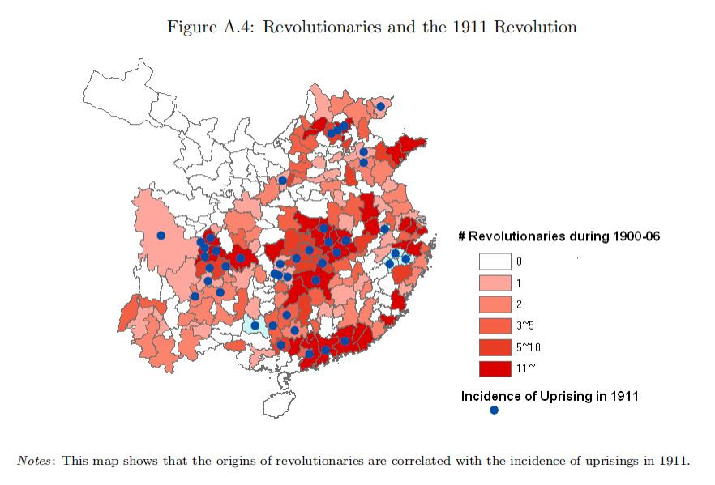
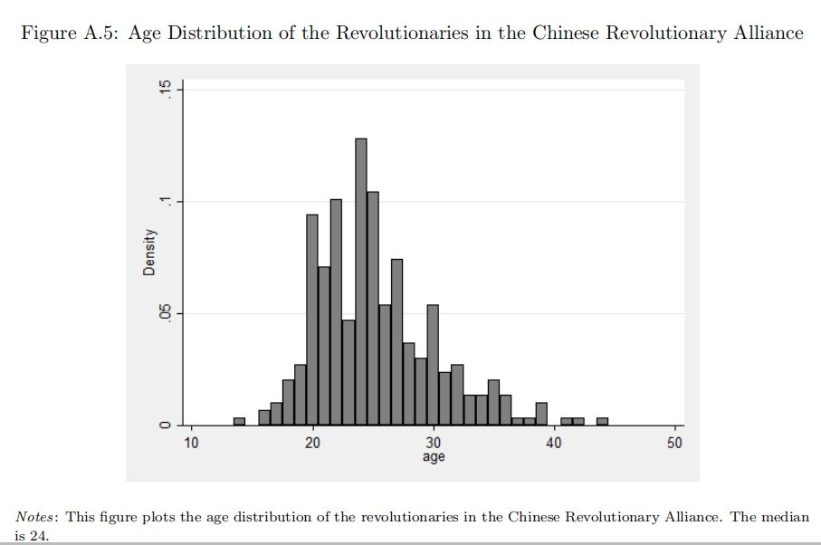

科举制的废除与清朝的覆灭
原创 政观
政文观止Poliview
微信号 zhengwenguanzhi
功能介绍 从一群年轻人的视角出发，专业、专注、专解海内外比较政治经济研究的前沿佳作。
__发表于
#历史政治学 58 个
#国家建构与国家发展 70 个
**文献来源 ：**Ying Bai & Ruixue Jia, “Elite Recruitment and Political Stability,” Econometrica , Vol. 84, No. 2 (March 2016), 677–733
作者简介 ：
白营：香港中文大学经济系助理教授，研究兴趣集中在发展经济学、经济史以及政治经济学
主页：http://www.econ.cuhk.edu.hk/econ/en-gb/people/faculty?view=faculty&id=ybai
贾瑞雪：加州大学圣迭戈分校（UCSD）全球政策与战略学院助理教授，研究兴趣为政治经济学、发展经济学与中国经济史
主页：https://ruixuejia.weebly.com/
科举制的废除与清朝的覆灭存在一定的联系，这是大部分研究都认同的一个观点。白营和贾瑞雪（2017）在《计量经济学》杂志（Econometrica，SSCI）上发表的文章Elite Recruitment and Political Stability就此问题进行了深入探讨。他们认为，1905年科举制的废除和1911年爆发的辛亥革命（标志着清朝的彻底灭亡）存在着一定的因果联系。他们在文章中进一步提供了一个机制解释：科举制的废除，改变了那些正在苦读的考生的未来预期，关闭了社会流动的通道，进而使这部分群体参加革命。
一、数据库
关于科举配额的数据和革命的数据均来自《钦定大清会典事例》，这是作者依据历史资料自行建立的一个庞大数据库。下图分别是文中给出的配额数据来源和革命数据来源的示例，实际上的数据库建立远比这个要复杂。


二、主要模型
**
**

从上图可以看出，科举制配额和1905和1906两个年份的交互项，对参与革命具有显著的正向影响。而科举制的正式废除就是在1905年。由于这是省级层面的面板数据（panel data），因此回归模型的结果在一定意义上可以理解成因果关系。
三、机制解释
精英的资格（elite eligibility） 。科举制的废除打破了考生进入精英阶层的愿望，降低了他们参与革命的机会成本。
精英的抗争（elite resistance） 。那些通过科举考试进入精英阶层的政治官僚，因为科举的废除上升通道受阻，降低了他们进行地方治理的积极性，间接的促进了革命的兴起。
现代人力资本的视角。科举制废除，使得年轻学生从传统典籍的故纸堆中走出来，更有机会接触到西方的意识形态和思想观念，对专制主义皇权产生了质疑，为其参加革命做好了思想准备。
国家能力（state capac ity）的视角 。科举制废除之后，清朝丧失了通过考试选拔精英官僚的手段，降低了国家弹压的能力。
通过建立计量模型，作者证明第一种机制解释更加符合实际情况，并且给出了下图。

由上图可知，革命参与度较高的地方，也是传统科举考试配额较多的地方（如今天的江浙沪、山东以及中原等地区）。

而上图表现的是参与革命的群体年龄分布，中位值是24岁，这也从侧面说明了第一种机制的合理性：参与革命的主体是那些正在备考的年轻考生。
四、结论
作者总结道：科举制的废除与清朝的覆灭存在一定的因果关系，这一历史有助于我们重思制度与发展之间的关系，特别是强调吸纳社会精英与保持政治稳定之间的关系。当然作者也强调，清朝的覆灭是多重因果造成的，科举制的覆灭只是其中的一个因素。作者最后指出，此研究中提到的现代人力资本与社会资本也为后续研究提供了进一步的思考方向。
编后记：
首先，这是政观摘编的第一篇经济史文献，文中的结论基本符合目前学术界相关研究的大致趋向。更重要的是其有新颖的方法贡献，因此能够发表在经济学界的顶级期刊当中。将历史资料进行量化编码建立数据库，是近年来在经济学和历史学研究兴起的一种新的研究方法。国内比较有代表性的有梁晨等（2012）在《中国社会科学》的文章《无声的革命：北京大学与苏州大学学生社会来源研究（1952—2002）》。
其次，本文虽然研究的对象是历史，但是其对我们思考当下有重要启发。事实上，将国家政权组织起来的郡县制与具备现代官僚制雏形的科举制，是古代中国最伟大的制度发明之一。这种发明能最大程度地从社会各个阶层中将优秀人才选拔出来，纳入国家体系进而为朝廷服务，不仅有利于打破阶层固化，便于社会阶层的流动，更在于强化了国家政权的韧性，巩固了政治稳定。对当代中国而言，将精英吸纳进体制的做法正是对古代文明的一种传承，这其中就包括了最核心的公务员考试制度。正如王裕华助理教授所说，把优秀人才吸纳进体制造就了当代中国的国家能力。


政观
感谢你支持学术公益
微信扫一扫赞赏作者 __赞赏
已喜欢，对作者说句悄悄话
取消 __
发送给作者
发送
最多40字，当前共字
上一页 1/3 下一页
长按二维码向我转账
感谢你支持学术公益
受苹果公司新规定影响，微信 iOS 版的赞赏功能被关闭，可通过二维码转账支持公众号。
预览时标签不可点
个
上一篇 下一篇
微信扫一扫
关注该公众号
微信扫一扫
使用小程序
： ， 。 视频 小程序 赞 ，轻点两下取消赞 在看 ，轻点两下取消在看